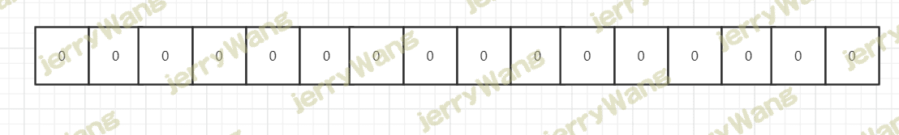
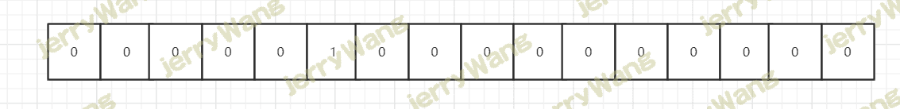
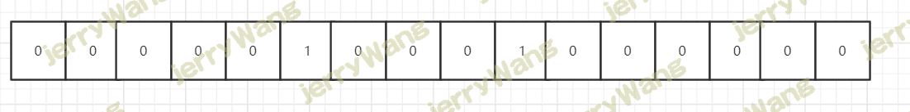
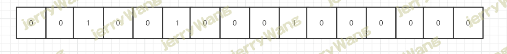

布隆过滤器
大白话布隆过滤器
不知道从什么时候开始，本来默默无闻的布隆过滤器一下子名声大燥，仿佛身在互联网，做着开发的，无人不知，无人不晓，哪怕对技术不是很关心的小伙伴也听过它的名号。我也花了不少时间去研究布隆过滤器，看了不少博客，无奈不是科班出身，又没有那么聪明的头脑，又比较懒…经过“放弃，拿起，放弃，拿起”的无限轮回，应该算是了解了布隆过滤器的核心思想，所以想给大家分享下。
布隆过滤器的应用
我们先来看下布隆过滤器的应用场景，让大家知道神奇的布隆过滤器到底能做什么。
缓存穿透
我们经常会把一部分数据放在Redis等缓存，比如产品详情。这样有查询请求进来，我们可以根据产品Id直接去缓存中取数据，而不用读取数据库，这是提升性能最简单，最普遍，也是最有效的做法。一般的查询请求流程是这样的：先查缓存，有缓存的话直接返回，如果缓存中没有，再去数据库查询，然后再把数据库取出来的数据放入缓存，一切看起来很美好。但是如果现在有大量请求进来，而且都在请求一个不存在的产品Id，会发生什么？既然产品Id都不存在，那么肯定没有缓存，没有缓存，那么大量的请求都怼到数据库，数据库的压力一下子就上来了，还有可能把数据库打死。
虽然有很多办法都可以解决这问题，但是我们的主角是“布隆过滤器”，没错，“布隆过滤器”就可以解决（缓解）缓存穿透问题。至于为什么说是“缓解”，看下去你就明白了。
大量数据，判断给定的是否在其中
现在有大量的数据，而这些数据的大小已经远远超出了服务器的内存，现在再给你一个数据，如何判断给你的数据在不在其中。如果服务器的内存足够大，那么用HashMap是一个不错的解决方案，理论上的时间复杂度可以达到O(1)，但是现在数据的大小已经远远超出了服务器的内存，所以无法使用HashMap，这个时候就可以使用“布隆过滤器”来解决这个问题。但是还是同样的，会有一定的“误判率”。
什么是布隆过滤器
布隆过滤器是一个叫“布隆”的人提出的，它本身是一个很长的二进制向量，既然是二进制的向量，那么显而易见的，存放的不是0，就是1。
现在我们新建一个长度为16的布隆过滤器，默认值都是0，就像下面这样：

现在需要添加一个数据：
我们通过某种计算方式，比如Hash1，计算出了Hash1(数据)=5，我们就把下标为5的格子改成1，就像下面这样：


还是通过某种计算方式，比如Hash3，计算出了Hash3(数据)=2，我们就把下标为2的格子改成1，就像下面这样：

这样，刚才添加的数据就占据了布隆过滤器“5”，“9”，“2”三个格子。
可以看出，仅仅从布隆过滤器本身而言，根本没有存放完整的数据，只是运用一系列随机映射函数计算出位置，然后填充二进制向量。
这有什么用呢？比如现在再给你一个数据，你要判断这个数据是否重复，你怎么做？
你只需利用上面的三种固定的计算方式，计算出这个数据占据哪些格子，然后看看这些格子里面放置的是否都是1，如果有一个格子不为1，那么就代表这个数字不在其中。这很好理解吧，比如现在又给你了刚才你添加进去的数据，你通过三种固定的计算方式，算出的结果肯定和上面的是一模一样的，也是占据了布隆过滤器“5”，“9”，“2”三个格子。
但是有一个问题需要注意，如果这些格子里面放置的都是1，不一定代表给定的数据一定重复，也许其他数据经过三种固定的计算方式算出来的结果也是相同的。这也很好理解吧，比如我们需要判断对象是否相等，是不可以仅仅判断他们的哈希值是否相等的。
也就是说布隆过滤器只能判断数据是否一定不存在，而无法判断数据是否一定存在。
按理来说，介绍完了新增、查询的流程，就要介绍删除的流程了，但是很遗憾的是布隆过滤器是很难做到删除数据的，为什么？你想想，比如你要删除刚才给你的数据，你把“5”，“9”，“2”三个格子都改成了0，但是可能其他的数据也映射到了“5”，“9”，“2”三个格子啊，这不就乱套了吗？
相信经过我这么一介绍，大家对布隆过滤器应该有一个浅显的认识了，至少你应该清楚布隆过滤器的优缺点了：
- 优点：由于存放的不是完整的数据，所以占用的内存很少，而且新增，查询速度够快；
- 缺点： 随着数据的增加，误判率随之增加；无法做到删除数据；只能判断数据是否一定不存在，而无法判断数据是否一定存在。
可以看到，布隆过滤器的优点和缺点一样明显。
在上文中，我举的例子二进制向量长度为16，由三个随机映射函数计算位置，在实际开发中，如果你要添加大量的数据，仅仅16位是远远不够的，为了让误判率降低，我们还可以用更多的随机映射函数、更长的二进制向量去计算位置。
Python实现布隆过滤器
布隆过滤器简介
bloomfilter：是一个通过多哈希函数映射到一张表的数据结构，能够快速的判断一个元素在一个集合内是否存在，具有很好的空间和时间效率。（典型例子，爬虫url去重）
原理：
BloomFilter 会开辟一个m位的bitArray(位数组)，开始所有数据全部置 0 。当一个元素过来时，能过多个哈希函数（h1,h2,h3….）计算不同的在哈希值，并通过哈希值找到对应的bitArray下标处，将里面的值 0 置为 1 。
关于多个哈希函数，它们计算出来的值必须 [0,m) 之中。
例子：
有这么一个网址
假设长度为 20的bitArray，通过 3 个哈希函数求值。如下图：

另外说明一下，当来查找对应的值时，同样通过哈希函数求值，再去寻找数组的下标，如果所有下标都为1时，元素存在。当然也存在错误率。（如：当数组全部为1时，那么查找什么都是存在的），但是这个错误率的大小，取决于数组的位数和哈希函数的个数。
Python中使用布隆过滤器
1 | #python3.6 安装 |
示例一
1 | #ScalableBloomFilter 可以自动扩容 |
示例二
1 | #BloomFilter 是定长的 |
Redis实现布隆过滤器
要想使用redis提供的布隆过滤器，必须添加redis 4.0版本以上的插件才行，具体参照网上安装步骤。
Docker安装
RedisBloom需要先进行安装，推荐使用Docker进行安装，简单方便:
1 | docker pull redislabs/rebloom:latest |
直接编译
当然也可以直接编译进行安装:
1 | git clone https://github.com/RedisBloom/RedisBloom.git |
此模块不仅仅实现了布隆过滤器，还实现了 CuckooFilter（布谷鸟过滤器），以及 TopK 功能。CuckooFilter 是在 BloomFilter 的基础上主要解决了BloomFilter不能删除的缺点。先来看看 BloomFilter，后面介绍一下 CuckooFilter。
基本命令
1 | bf.add 添加元素到布隆过滤器 |
例子：
1 | > bf.add rurl www.baidu.com |
布隆过滤器在第一次add的时候自动创建基于默认参数的过滤器，Redis还提供了自定义参数的布隆过滤器。
在add之前使用bf.reserve指令显式创建，其有3个参数，key，error_rate， initial_size，错误率越低，需要的空间越大，error_rate表示预计错误率，initial_size参数表示预计放入的元素数量，当实际数量超过这个值时，误判率会上升，所以需要提前设置一个较大的数值来避免超出。
默认的error_rate是0.01，initial_size是100。
利用布隆过滤器减少磁盘 IO 或者网络请求，因为一旦一个值必定不存在的话，我们可以不用进行后续昂贵的查询请求。
测试误判率
接下来来测试一下误判率:
1 | import redis |
测试结果如下:
1 | #第一次测试 |
size=1000，就出现1%的误判率，size越高误判率会越高，那有没有办法控制误判率了，答案是有的。
实际上布隆过滤器是提供自定义参数，之前都是使用默认的参数，此模块还提供了一个命令bf.reserve，提供了三个参数， key, error_rate和initial_size。错误率越低，需要的空间越大，initial_size参数表示预计放入布隆过滤器的元素数量，当实际数量超出这个数值时，误判率会上升。 默认的参数是 error_rate=0.01, initial_size=100。
接下来测试一下:
1 | import redis |
新增一行代码，简单测试一下效果:
1 | #第一次执行 |
误判率瞬间少了1000多倍。
但是要求误判率越低，所需要的空间是需要越大，可以有一个公式计算，由于公式较复杂，直接上类似计算器，感受一下:
如果一千万的数据，误判率允许 1%， 大概需要11M左右
如果要求误判率为 0.1%，则大概需要 17 M左右。
但这空间相比直接用set存1000万数据要少太多了
 微信
微信 支付宝
支付宝